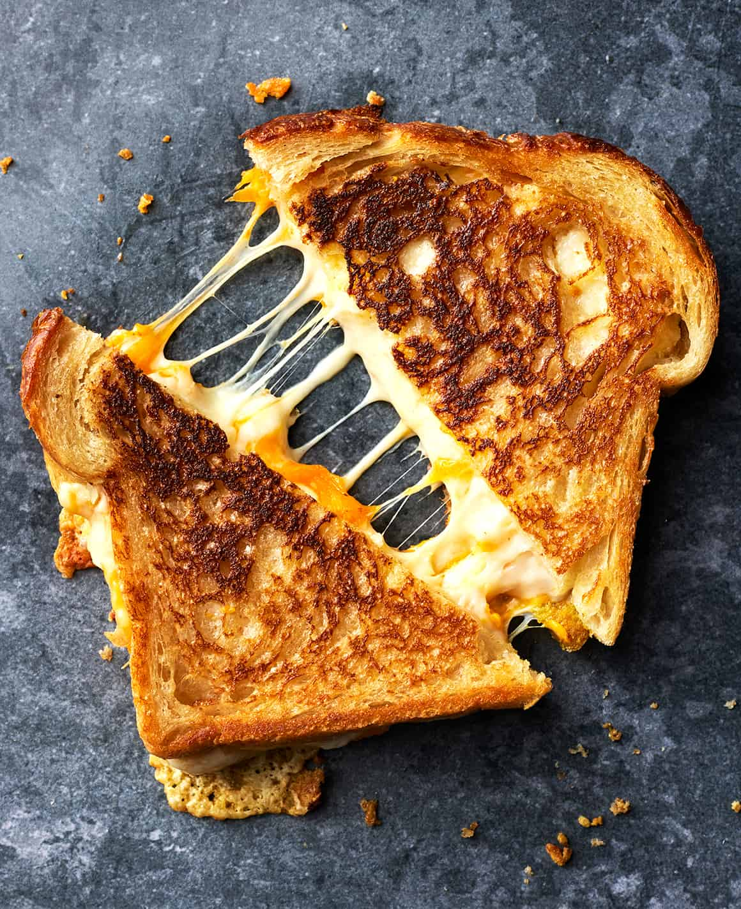

Grilled Cheese

Description
Have you ever wondered how they made those grilled cheese you see in the
commercial with the buttery crisp edges and the cheese that stretches for
miles when you take a bite? look no further
Ingredients
- Cheeses: sharp chedder,provolone,
- Unsalted butter
- Sourdough Bread
Directions
- Heat up a skillet and add butter
- Add cheese between your two slices of sourdough
-
Place in skillet and cook for one minute each side or until golden brown
Home